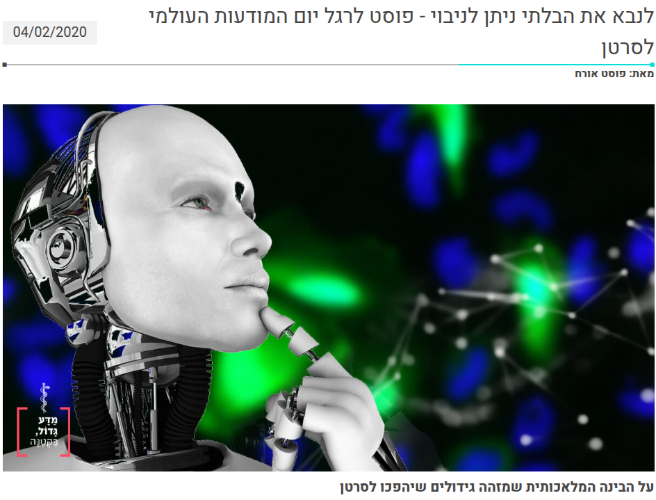

לנבא את הבלתי ניתן לניבוי
Chen Brestel,
Amit Oved
מדע גדול, בקטנה, 5780 2020
אנו מציגים יכולת מלהיבה לחזות האם גידול עתיד להפוך לסרטן. בין השאר תבינו את המנגנון הביולוגי המוביל לסרטן ותלמדו איך מאמנים מערכת בינה מלאכותית לחזות זאת. התיאור מוצב בשפה בהירה ופשוטה השווה לכל נפש. מוזמנים להעשיר את ידיעתכם במדע פופולרי.
#medicine #computer_vision #popular_science #review #5780 #2020
Thanks to Amir Bar for the page template
© 5785 2025 Chen Brestel. All rights reserved.
Welcome to follow on social media